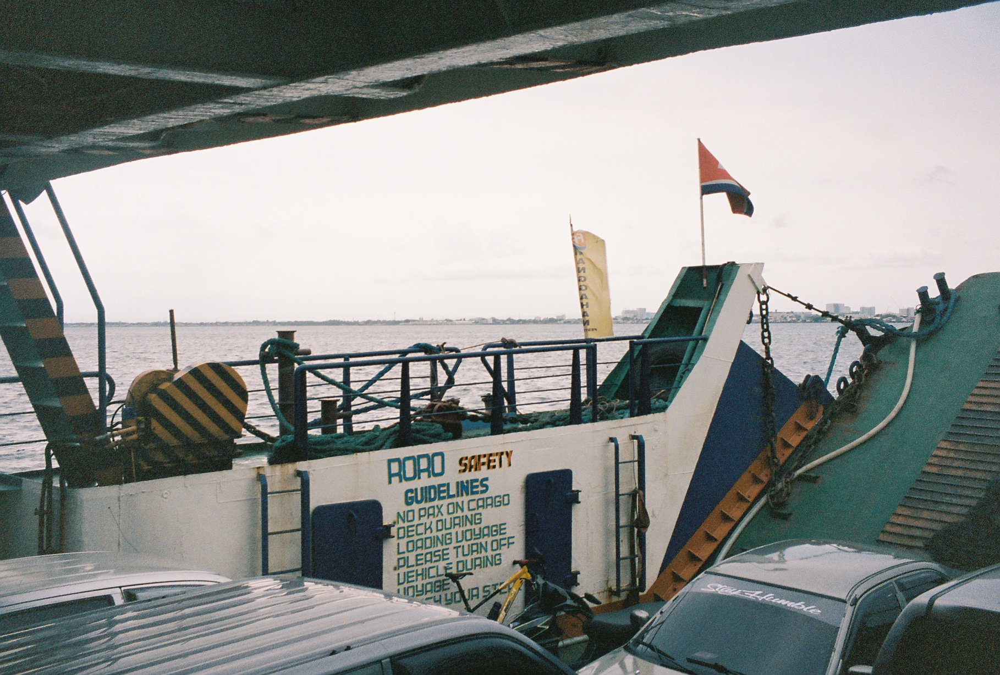
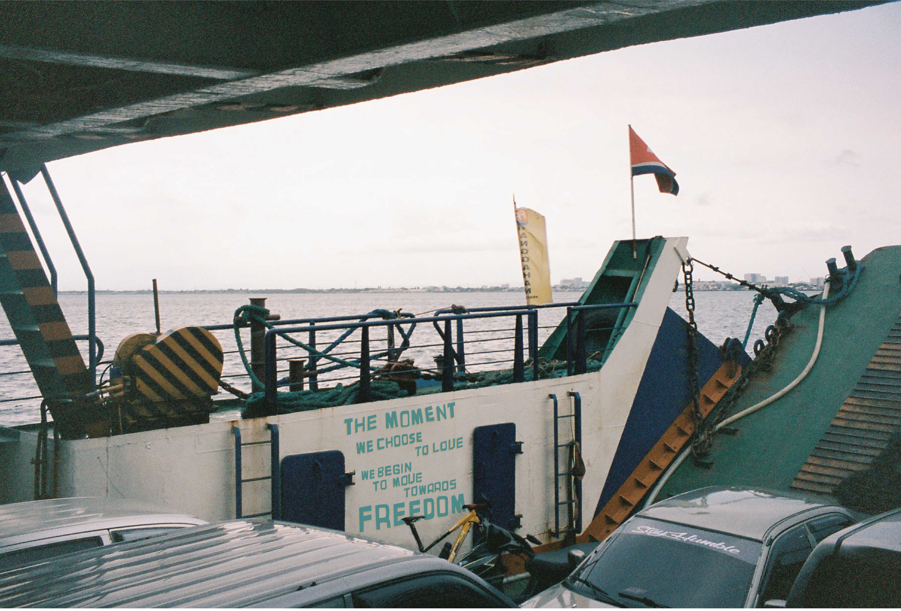
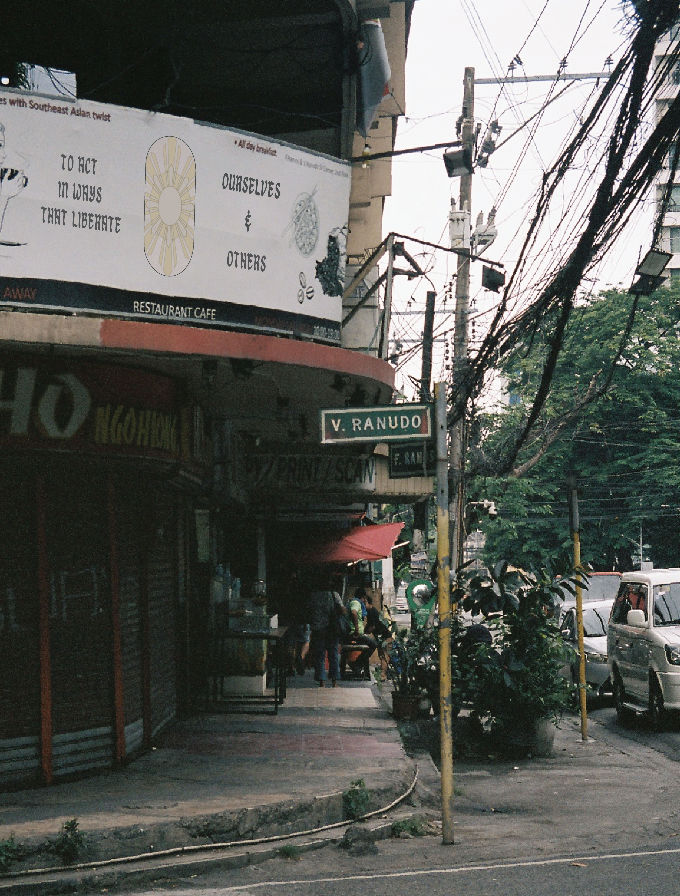
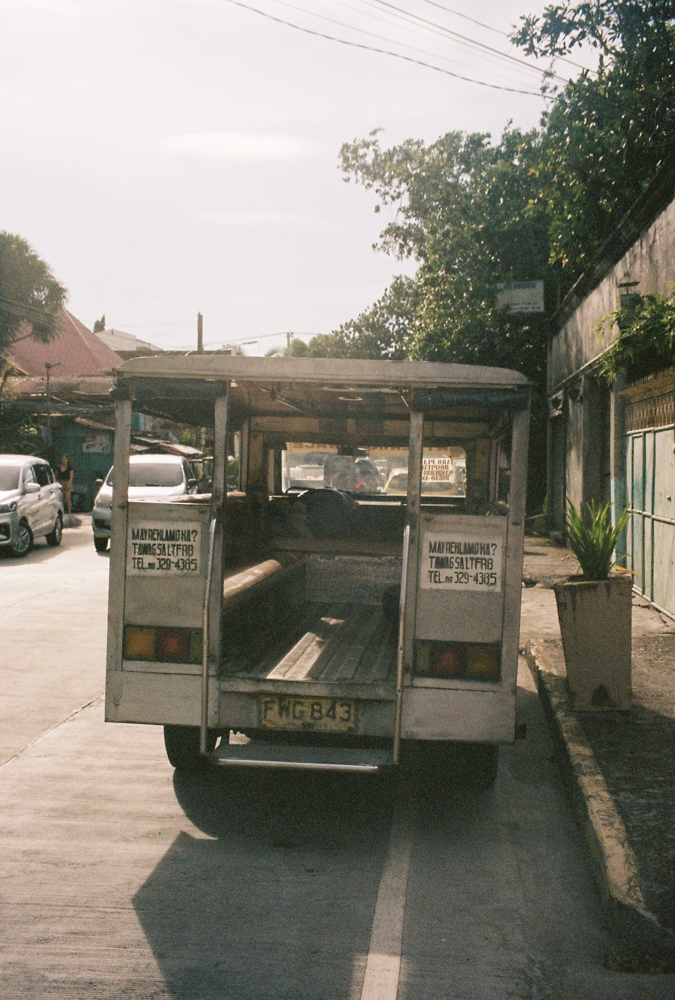
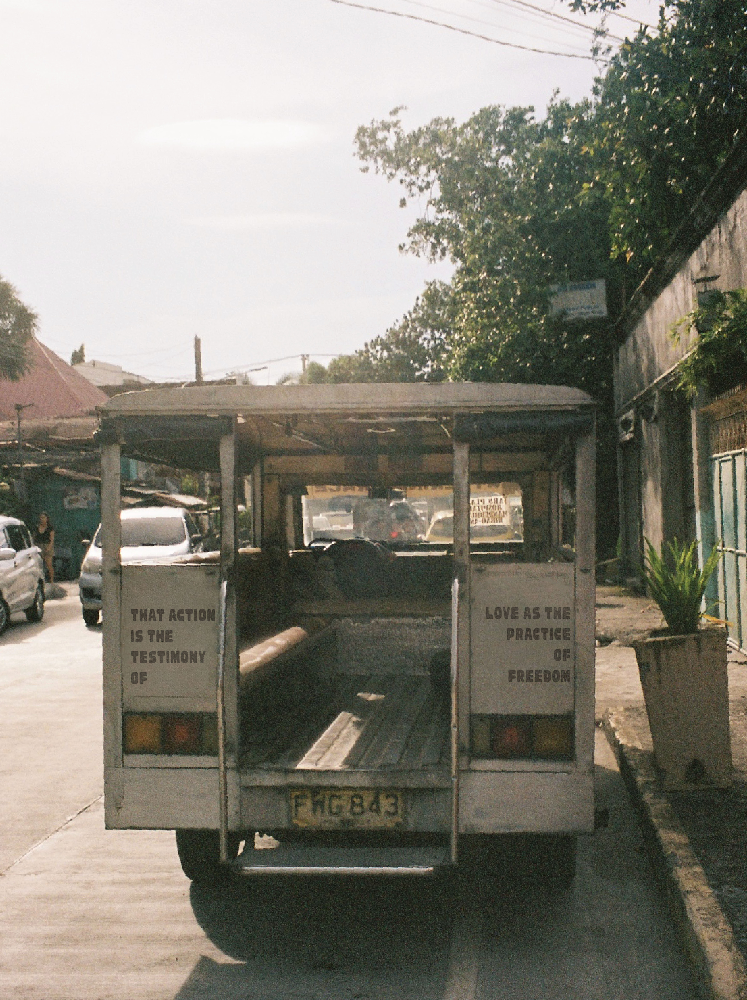

a continuation of my exploration into the relationship between signage and resistance, as inspired by bell hooks's essay "Love as the Practice of Freedom"
for this project, i combined images taken from my visit to the Philippines with text using adobe illustrator and photoshop
as i continue to embark on a journey of self-discovery, i wanted to create something representative of the beauty and the strength that lies in the ordinary and mundane
culture is love and love is freedom
with this in mind, we are constantly surrounded with reminders of love and the innate human quality to care for one another
so long as we look around, we will realize this




